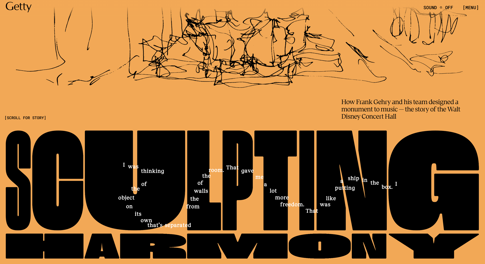
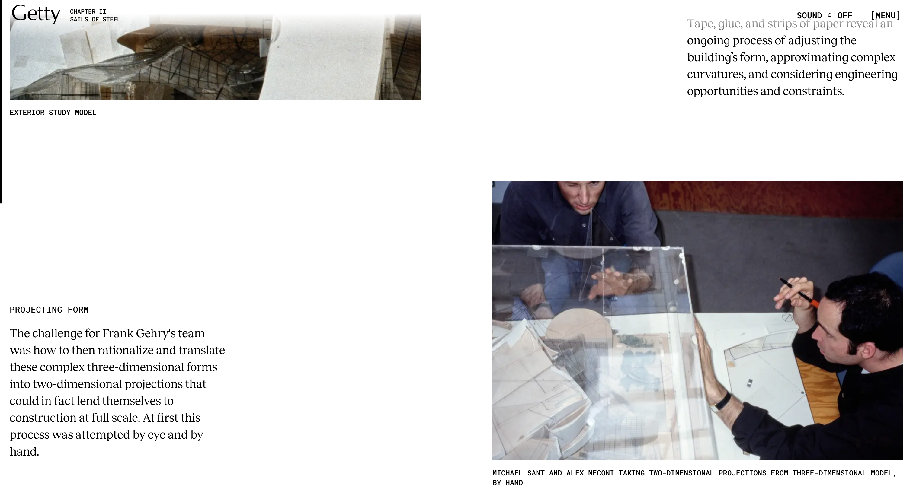
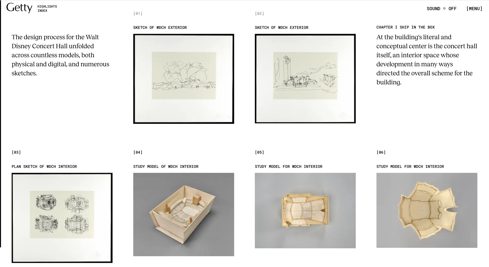
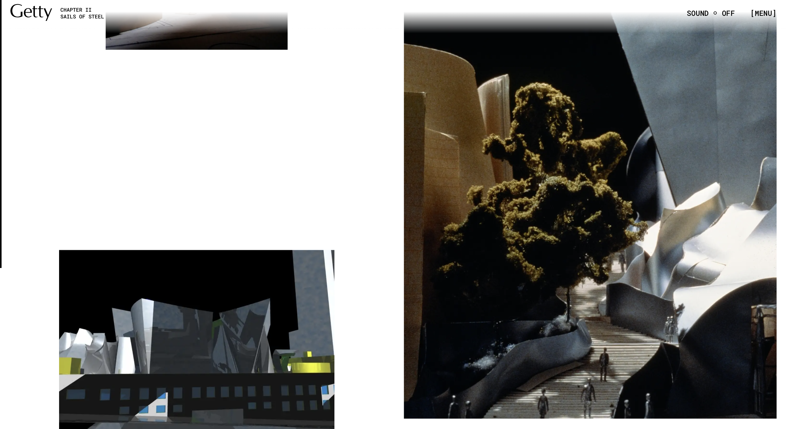
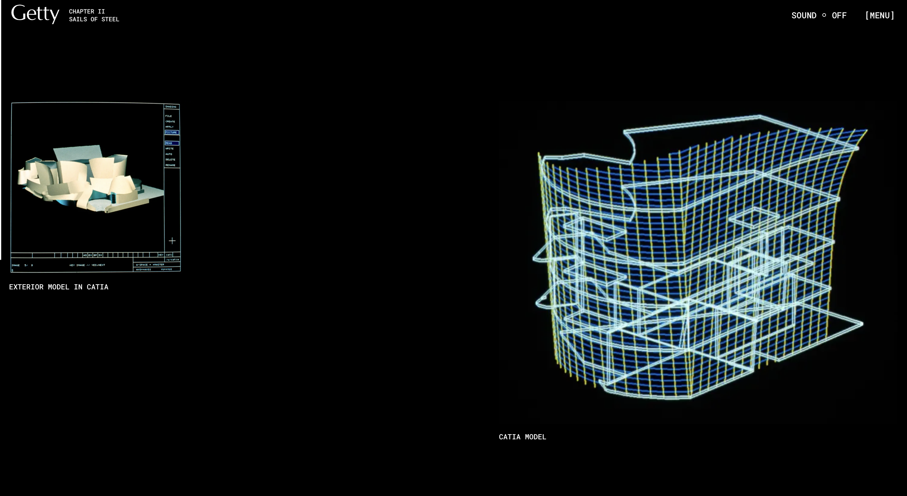

Interactive Experience Research Project
Interactive Media - Kyara Herman s4190028
SCULPTING HARMONY: How Frank Gehry and his team designed a monument to music - the story of the Walt Disney Concert Hall (by Getty)
The Website
Q1

The first thing I paid attention to was how interactive it was. The experience heavily relies on user participation. I had to scroll to each section to read and the headings would bend to the direction I scrolled in. In the opening page, I was able to read a brief introduction of the experience by dragging my cursor around, which revealed a path of words. The doodles also followed the direction of my cursor. I was also able to pause or skip the video anytime I wanted. I found this very unique and interesting and it stood out to me.
Q2
Opened the website, looked at the title, dragged my cursor around as it drags out a brief introduction of the site, scrolled down through the opening section, read the introduction about Frank Gehry and the Walt Disney Concert Hall, continued scrolling into Chapter I, watched an interactive video of Chapter I: Ship in the Box, looked at the images and architectural models, read information about the interior design, continued scrolling into Chapter II, watched an interactive video of Chapter II: Sails of Steel, looked at the exterior models and sketches, read about Gehry’s design process, continued scrolling into Chapter III and watched an interactive video of Chapter III: Bouquet of Sound.
Q3

I spent the most time watching the videos of each chapter. I found them very entertaining, being able to see Frank Gehry’s process in making the Walt Disney Concert Hall.
Q4
The most common action was scrolling. The experiences is mainly designed around scrolling through the story, so I had to repeatedly scroll down to move through the different chapters and sections to discover new information.
Q5

I think the main goal is to educate the audience about how the Walt Disney Concert Hall was designed and built, while also showing the creative process behind Frank Gehry’s architecture. The experience was just for showing the finished building, it was also to show the experimentation, models, and decisions that led to it.
Q6

It communicates this through the combination of written information, photographs, sketches, models, animation, videos, and music. The experience is divided into three chapters; Ship in the Box, Sails of Steel, and Bouquet of Sound, which make the experience feel like a story.
Q7
I think it is designed to be explored for longer than just a few minutes. Users could spend around 10-20 minutes going through the main story itself, but could also return multiple times to look at specific models, imaged, or section in more detail. The videos also take quite awhile, and users might even goo back to watch it again for better understanding.
Q8

The website communicated this through its scrolling and chapter system. It encourages viewers to keep moving through the story rather than simply looking at just one page. In the end, it also includes an index of all the archival materials, suggesting that viewers can explore individual pieces of the collection after experiencing the main story.
Q9

It references several different media forms, including online exhibitions/websites, photography, film and video interviews, architectural drawings and sketches, physical models, 3D digital modeling, animation, archival documents, music, drone footage, and more.
Q10
It makes me feel like I should actively explore the information rather than just read it passively. I feel encouraged to scroll, look closely at the visuals, interact with different section, and take my time looking at each material.
Q11
It makes the experience feel more immersive and interesting than a traditional research article. The combination of music, visuals, animation, and storytelling make me feel curious and encourages me to discover how the building was created.
Q12
The amount of scrolling can become slightly frustrating as there is a lot of information and some sections take time to move through. If I want to quickly find a particular piece of information, the scrolling format is less convenient than a traditional webpage with clear menus.
Q13

I would say the most satisfying part is seeing the design process through the different models and sketches. It is interesting to see how simply physical models and drawings gradually developed into such. Complex building. The interactive format makes the research feel more like discovering the design process rather than simply reading about it.